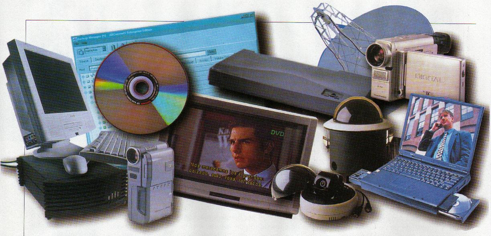
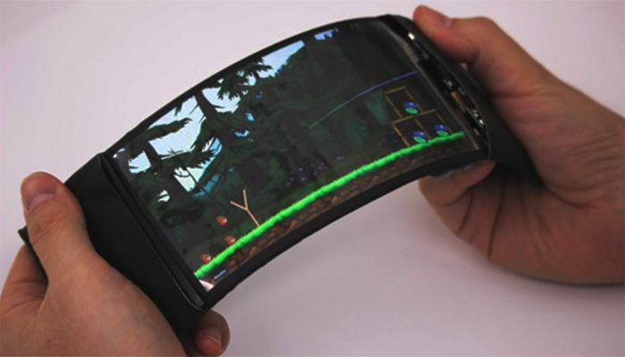

¿Qué es la tecnología?
La tecnología es el conjunto de nociones y conocimientos científicos que el ser humano utiliza para lograr un objetivo preciso, que puede ser la solución de un problema específico del individuo o la satisfacción de alguna de sus necesidades.
Desde el inicio el ser humano ha tenido la necesidad de construir y desarrollar nuevos objetos que le faciliten su trabajo y mejoren su calidad de vida.
El comienzo de la tecnología surge con el descubrimiento del filo de una piedra para cortar, así de sencillo.
Característica de la tecnología:
-
Está presente en todos los ámbitos.
-
Permite fabricar nuevos objetos: a través de ella, el ser humano modifica el medio que lo rodea.
-
Es responsable de la mayoría de los descubrimientos del hombre.
-
Si está bien utilizada mejora la calidad de vida del ser humano, si está mal utilizada puede causar graves daños.
-
Está sujeta al cambio.
-
El desarrollo tecnológico dispar puede generar brechas sociales en una comunidad, regiones o naciones.
Tipos de tecnología:
La tecnología se puede clasificar de diferentes maneras según las características que se tomen en cuenta.
Según el tipo de producto:
- Tecnologías Duras: Utilizan elementos de las ciencias duras como la ingeniería, la mecánica, la matemática, la física, la química. El producto que se obtiene es visible y tangible, es decir, se trata de la producción de bienes materiales. Por ejemplo: Impresoras, Automóvil, Radio FM, Televisor, Avión, celular.

- Tecnologías blandas: por lo general, se las utiliza para mejorar procesos y lograr mayor eficiencia en instituciones o empresas. Ejemplos (El software de tu celular, El internet, El radar, El wifi, El bluetooth.)

- Tecnología fija: La tecnología fija consiste en aquel tipo de tecnología que se concibe para una tarea o uso específico, por lo que su reutilización en otros productos finales es muy complicada, como por ejemplo, las refinerías de petróleo, la siderúrgica, cemento y petroquímica, etc.
- La tecnología flexible: es aquella que se puede utilizar en distintos productos finales, independientemente de su desarrollo u objetivo original. Ejemplo son las pantallas de televisión, que si bien se crearon para un producto concreto, luego se ha podido implementar en monitores, consolas, smartphones, etc.
